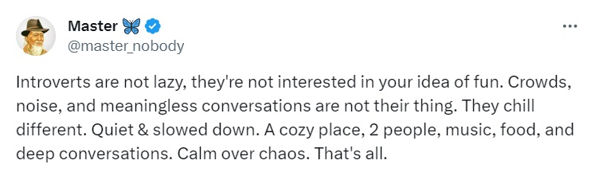

Still trying to make a big deal out of me, huh? Sheesh. After all these years.
My own little "game", which I have developed over the years:
Personality types:

Motives:

Intelligence types:

Sexuality types:

Here is the "female" gameboard, which sits/slides atop the "male" gameboard, but I haven't figured out the positions yet. (I think it goes: negative, neutral, neutral, positive)

possible rough draft:

Some miscellaneous characteristics:

Imagine: people are using these ideas to analyze movies.
Personality types:
Motives:
Intelligence types:
Sexuality types:
Here is the "female" gameboard, which sits/slides atop the "male" gameboard, but I haven't figured out the positions yet. (I think it goes: negative, neutral, neutral, positive)
possible rough draft:
Some miscellaneous characteristics:
Imagine: people are using these ideas to analyze movies.
"Half the world hates
what half the world does every day."
~ Rush
Humans are too social. This means many things:
* We would rather have negative socializing than none at all.
* We stay in bad or dull relationships, because
* We're afraid of being alone.
*
*
*
*
Thought experiment:
You had a normal childhood. Then you were abandoned on an island. There is enough food and warmth to keep you healthy and you live well into your 90s, but you never encounter another human that whole time. How will you feel? Will you be happy? How?
"Walked out this morning,
don't believe what I saw,
hundred billion bottles,
washed up on the shore,
Seems I'm not alone in being alone,
hundred billion castaways,
looking for a home,"
~ Sting, "Message in a Bottle"
If "grouping together" is just something that people commonly do,
what do they do after that?
Even if the geisha is not a prostitute,
there will always be men who demand that she be.
In middle age, the chauvinist moves to the right, but then he goes too far and finds out that far-right is not much different than far-left, especially when he remains a chauvinist.
Believe it or not, there were anti-Nazi Germans in Nazi Germany. (example: Dietrich Bonhoeffer, killed, 1945) There are anti-communists in communist countries. There are people in India who are against the caste system and arranged marriages. Faceapp, wherever it came from, is a pretty good app and $30 a year is a pretty good price.


(SpyTech? Psssh. That's in EVERYTHING.)
Humans are too visual.
The HackerSpies and the FakeNewsMakers are trying to make this world as bad as it used to be. (I believe Osama bin Laden didn't exist.)
The conflicted think all is conflict.
She's over 30 now,
never been married,
not even kissed,
she didn't think
it could happen to her,
she thought for sure
she was alpha female,
big woman on campus
and everywhere else, too,
Her mother hounds her,
go get a man!
You know too much,
but it won't last!
Heaven forbid you be alone,
and learn more
than most people,
because it won't matter anyway,
we all end up the same,
go get that man!
Get that baby!
You've known plenty of alpha men,
pick one and get busy!
"I got your front
and your side and your back,
if that's what ya want."
~ "For My Sistas"
"You'll come around."
~ Cutler, Preven, Cyrus, "Full Circle"
I was walkin' in,
they were walkin' out.
With a facial expression
just as ugly as theirs,
I briskly looked and asked,
"So this is it, huh?"
"He treats us all the same ... like dogs."
~ about Vince Lombardi
Deep feelings of deceitful depression,
aggravatingly annoying aggression,
out of you,
the most they can do
is hope for a carefully conjured confession?
A world of critics and judges,
cynics and smudges,
smearing personas,
forever holding grudges.
"In the sweet old country where I come from,
nobody ever works,
nuthin' ever gets done,"
~ name that Jagger/Richards song
"Broken bottles,
broken plates,
Broken switches,
broken gates,
Broken dishes,
broken parts,
Streets are filled with
broken hearts,
Broken words
never meant to be spoken,"
~ Bob Dylan, "Everything is Broken"
How permanent is personality?
Black person tested,
about a reaction to racism,
Yellow person, red person, too,
With what is white person tested?
the opposite assumption.
Is he or she racist?
Well, I ain't afraid to say it,
many white person guilty,
making for an embarrassing world.
Equality shouldn't have to be practiced, but
for alot of people ...
The Too-Much-Information Age: "I can name that tune in 0 notes."
Now she's over 40,
proved her mom wrong
and herself right,
auto-acting,
accordingly,
A very different song,
many mouths to feed,
so weirdly: all AND none?
She looks better than most,
a relative book to read,
more flexible than most,
even though there's no need.
She was happy to never have come out. Not because she believed gays shouldn't come out. In fact, she felt that they should come out. Nor did she believe that once you come out, you can't go back in. She just wasn't fully gay. She had some weird thoughts about Jesus and Mother Mary and Father Joseph. Then she learned about Buddha's son and the psychology of it all finally became clear. Now she knew why there was a slight difference in how her male friends treated her at their coming-out parties. Although she knew most of this was psychobabble, she had the time to hone it. She was free now in a way she hadn't planned. After all, it was Friday.
"We need to get you into a situation."
Very common pattern,
give up at the end,
phase after phase after phase,
very common pattern.
He was over 30 now and sometimes got ridiculed by the high schoolers. He was embarrasingly and reluctantly learning life lessons over and over, year after year. Even though his career dealt with technical concepts, people always came back to people and boy could they be wicked. The men and women at work liked him, but their "phases" usually seemed to change abruptly, leaving him feeling lonely and disliked. One of his closest friends was married and raising kids now. Plenty of women flirted with him, even married ones, but the ultimate relationship eluded him. It just hadn't happened. This wasn't quite the lifestyle he had planned. He was good at his job, but considering his age and his single status, instead of getting promoted, he feared the opposite. His personality was naturally changing and evolving. He was learning all the "tricks" of life. He faced it honestly and openly. Was this why people seemed so wicked?
Y'all ready for the Crash of '29?
personal ad, women seeking men: "no Kramers or Forest Gumps"
She was brought up well. Went to a very good state college. Met another alpha suburbanite. They married by 30. Now they're 50. The phases have gotten longer and longer and therefore she has had more time to ponder. It's not a question of whether he loves her. It's a more finely-tuned question. Does he love her more than he loves himself? Is he more interested in the female gender or the male gender? Despite all the distractions, there were only two choices. She finally knew it. He had always been chauvinistic. But how could she divorce him now? His main argument was, "We're all the same." He gave her several beautiful children, excellent financial skills and a wide social network. Their friends would be baffled if they broke up. So ... she kept putting it off.
I don't think your public and private personas should be opposites. I think one should simply be a little more pronounced than the other. I guess that's the difference between an introvert and an extrovert. Neither one is a flip-flopper, a Dr.Jeckyll/Mr.Hyde. One just prefers public and one prefers private.
A man came back from the Vietnam War very distraught, but also very glad to meet up with an old friend. They talked about the war. The soldier said, "It was so tricky, psychologically and even worse sociologically. I only saw a few women the whole time and they seemed like they enjoyed all the tricks and the torture. It was so confusing."
Noticing that his friend was seriously and perhaps permanently agitated, the other guy made a desperate suggestion.
"Look. I know a therapist. She's older. She's Oriental, you know, from the same area you were just at. She's experienced, quiet, gentle and highly intelligent."
"No thanks, man. Sounds creepy," the soldier declined.
Realizing that soldiers, like most men, rarely sought counseling, the friend spoke a little longer, trying to convince the soldier that all of life can be so tricky.
Finally, the soldier gave in. "Okay," he said. "I'll go see her. Hey, what kind of therapist is she? You know ... buddhist? or ... Freudian? or what?"
The friend replied, "Massage."
This doesn't rhyme you,
piece of slime,
thus, therefore and maybe hence,
this makes anti- .
One woman had a kid to take care of her,
One woman killed a kid because it threatened her,
One woman had no kids. She didn't like them,
One woman had no kids. She loved and would've spoiled them.
Tilly runs a store in the mall,
but on the farm, she's ticklish,
Harvest time is in the fall,
Cricket Green is British.
Happy Thanksgiving, ya TURKEYS.
Refraining can often be the hardest thing to do and yet
nobody ever wins an award for it.
Minorities and other minorities often don't seek high positions in society because they know how hard it is.
They know how hard it is, so they don't try.
They don't try, because they know how hard it is.
They know how hard it is, so they don't try.
They don't try, because they know how hard it is.
They know how hard it is, so they don't try.
They don't try, because they know how hard it is.
They know how hard it is, so they don't try.
They don't try, because they know how hard it is.
They know how hard it is, so they don't try.
They don't try, because they know how hard it is.
hypothesis: The majority doesn't want to know:
the technical details of their cars, computers, cellphones, etc.
how their meats got to their mouths
how their music got to their ears
________________________________
________________________________
________________________________

Thanks for sharing.
Even for the introvert, online education can be very difficult.